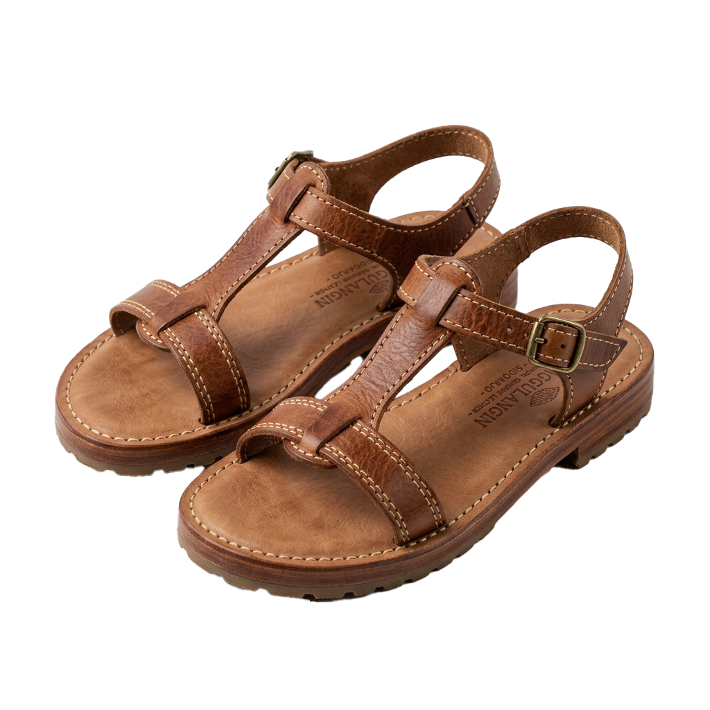
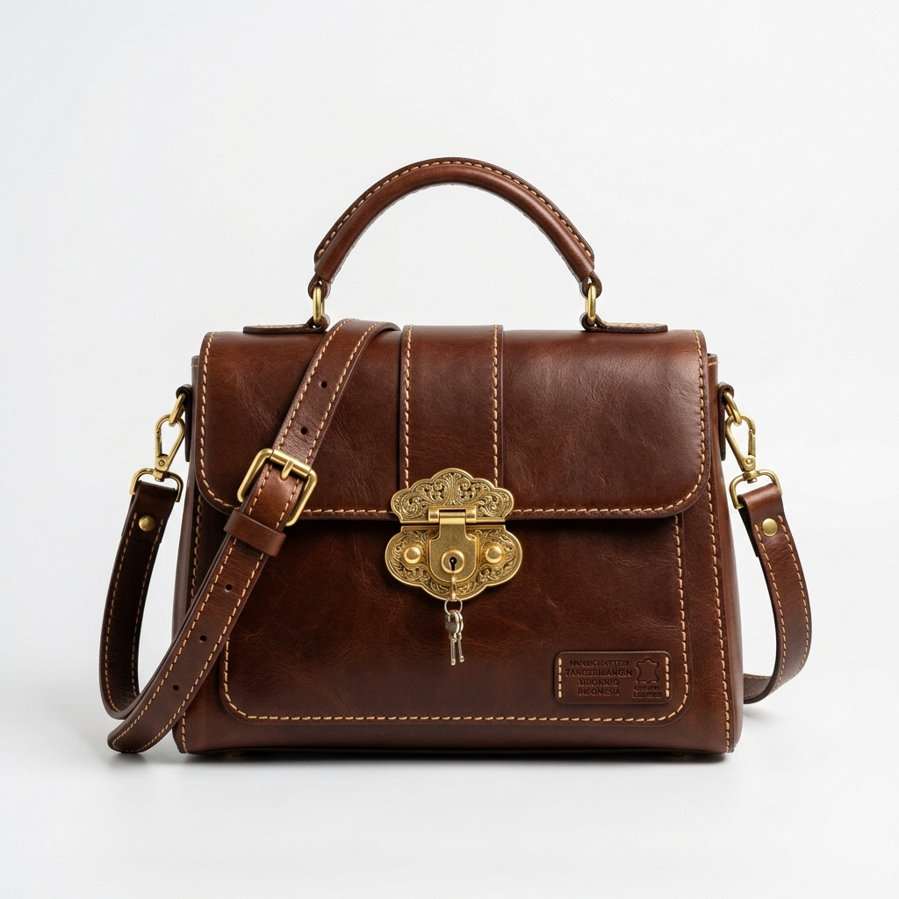
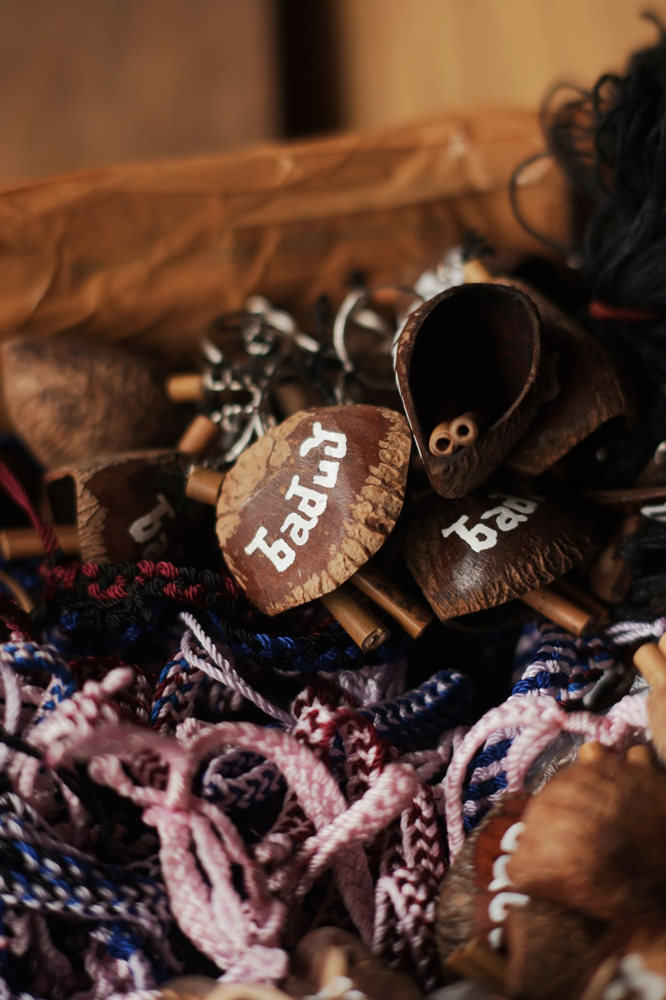
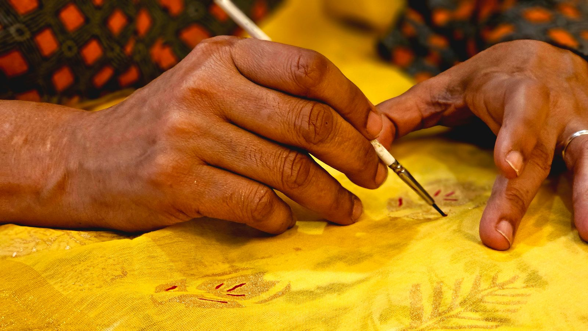
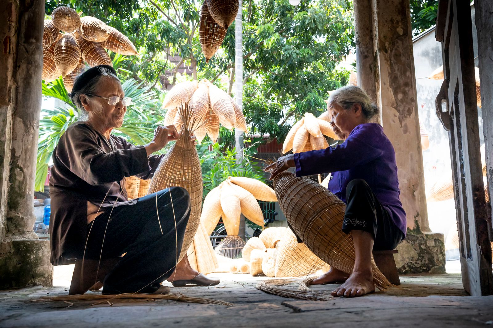
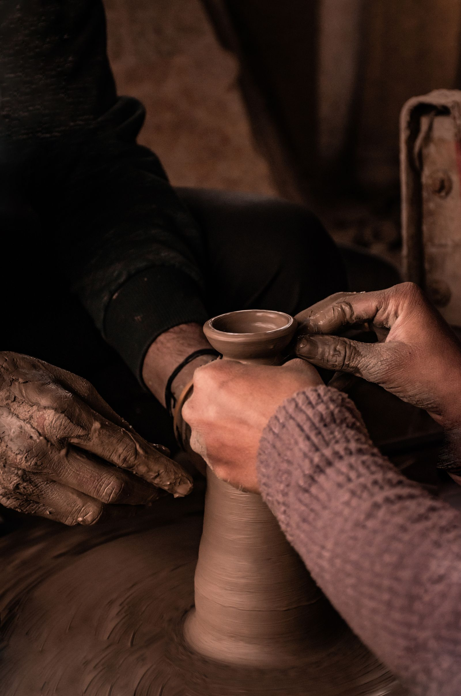
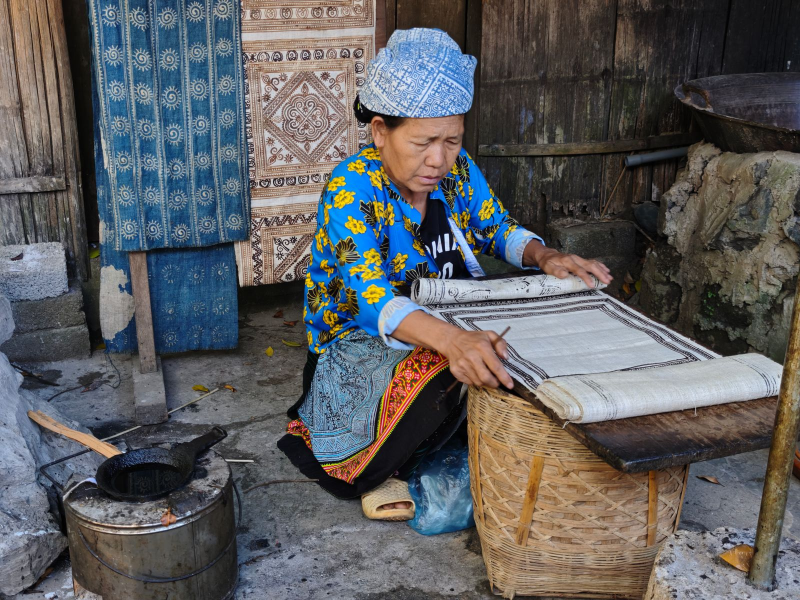

Pengrajin Lokal Langsung
Produk langsung dari tangan pengrajin Sidoarjo, tanpa perantara berlebih.
Kerajinan Asli Sidoarjo
Koleksi kerajinan tangan asli Sidoarjo — kulit Tanggulangin, batik Jetis, dan anyaman pandan pilihan.


Warisan Lokal
TokoKriya merayakan keahlian pengrajin lokal Sidoarjo — dari kulit Tanggulangin yang kokoh, batik Jetis yang indah, hingga anyaman pandan yang ramah lingkungan.
Kisah kamiProduk langsung dari tangan pengrajin Sidoarjo, tanpa perantara berlebih.
Kulit sapi asli, batik tulis canting, dan anyaman pandan pilihan terbaik.
Filter, wishlist, dan checkout yang jelas di satu alur.
Berbasis Sidoarjo, pengiriman cepat ke Surabaya Raya.





